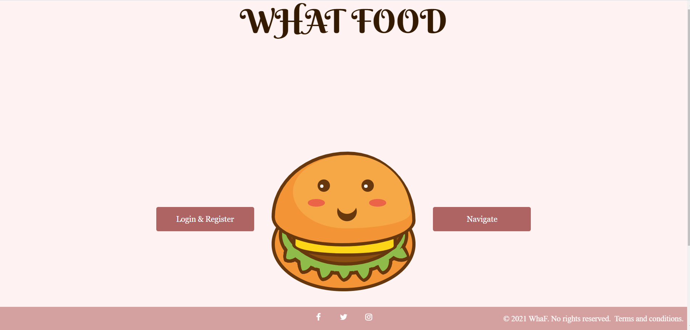

2. Introduction
What Food is a Web application where you can find new recipes that belong to a variety of categories and where you can add your own recipes. The application offers all these recipes to both users that have an account and users that don't (visitors). However, only users that have an account can add new recipes.
2.1 Scope
What Food is easy to use and accessible. This application is here to help those who are in need of cooking inspiration and to give a platform to people who love to cook and make new recipes. In order to use the application, all you have to do is access its link and either browse recipes or add new ones.
2.2 Conventions
When it comes to adding a new recipe, a connected user only has to go to the feed page, click the Add Recipe button which will then redirect them to the add recipe page where they must put all the characteristics of the recipe they want to add. After that, they only have to click on the Submit Recipe button. When the user clicks on the logo of every page, they will be redirected either to the feed page or the settings page, depending on the page that they are currently on. The same thing happens for connected users whenever they click on their avatar photo at the top of the navbar. All our social media links (FaceBook, Instagram, Twitter), as well as the link to our terms and policy can be found in the footer of every page on the application.
2.3 Product role
The purpose of this website is to help people find and share new recipes. Users can either make an account and be able to access some extra features (such as posting a recipe, show the fact that the user has tried a certain recipe by posting a photo of the final product and access to a user page where the user can see the recipes that they posted and the ones that they tried) or use the website without having to register (they will only be able to find new recipes).
2.4 References
In order to make the application's user interface as accessible as possible, we documented a few important and helpful websites that helped us in the web development process.
3. General Description
3.1 Product Perspective
This product offers a wider range of options and capabilities than other recipe Web applications (such as AllRecipes for example). Admin users can delete and modify all the other recipes and users. We have a wider variety of categories. The application offers the possiblity of filtering the default recipes and the search results by a few specifications. Users have a big variety of search parameters.
3.2 Functions
The application has many functionalities. Users can make an account or navigate as a visitor. Connected users can add their own recipes, try existing recipes, see their search history, all the recipes they added and the ones they tried. Admin users have access to all recipes and users and can modify and delete users and recipes. Visitors can see the default recipes (by clicking the home button on the feed page), they can do search and they can see the rankings.
3.3 User Categories
What Food is the perfect Web application for people who love to cook and either need to find some new recipes to try or want to share their recipes with other people. However, our product serves 3 types of clients/users: visitors, who are users that don't have an account and have limited privileges, normal users who have access to all the application's function other than the admin functionality and admin users who have the same privilege as normal user but they also have almost unlimited access to all the recipes and all the users in our database.
3.4 Operation Environment
As What Food is a Web application, it can be opened on any browser that supports HTML, CSS and JavaScript.
3.5 Design Constrains
Although our product has a wide range of functionalities, it also has some limitations. When it comes to searching, users can either search by one parameter or by 2 and one of them has to be the wanted ingredients. Rankings can only be exported as CSV or JSON. The instructions for a recipe must not extend a certain amount of characters (however that amount is a fairly big one).
3.6 User Documentation
The terms and policy page is meant to help our clients get to know us, understand our mission, their responsibility as users and exactly what data we collect from them, if they register. The landing page is the page where the user decides what type of client they want to be (if they want to register and then login or if they just want to be a visitor on the application and navigate).
4. External Requirements
4.1 UserInterface
Landing Page:
Login:

Register:

Feed:

Settings:

Terms and policy:

Recipe:

Add recipe:

Admin:

4.2 Software Interface
Register:
Feed:
Settings:
Terms and policy:
Recipe:
Add recipe:
Admin:
4.2 Software Interface
The application uses a relational database (PostgreSQL) in order to facilitate the functions provided to the user.
4.3 Communication Interface
When it comes to the relation and communication between the client and the server, What Food uses the HTTP protocol.
5. Functional Requirements
5.1 Register
In order to register on this website, the user must provide some information: their first and last name (only containing letters), their email adrress that must be valid (something@something.com), their username (only containing letters), a password (that must contain at least one letter, one number and one special character such as _, -, ~, <, >) and their date of birth.
5.2 Login and logout
After making an account, the user can login onto the website with their username and password. They must enter the correct username and password. When it comes to the logout process, the session associated to the user is deleted from the database and the user is redirected to the login and register page where they can choose how to proceed.
5.3 Add Recipe
Connected users have the possibility of adding their own recipes. In order to do that, they must provide all the chracteristics that a recipe has on our website: recipe name, recipe photo, prepping and total time, category, difficulty, number of ingredients and a list of the ingredients and a number of instructions, a list of those instructions and photos relevant to every instruction (one photo per instruction).
5.4 Recipes
For every user that we have, every user (regardless if they have an account or not) can see the characteristics of that recipe: name, recipe photo, prepping and total time it takes to make it, its category, how difficult it is to make, the number of ingredients and instructions it contains and the list of ingredients and instructions (for every instruction, all users can also see a photo representing that particular instruction in the hopes of making the process of recreating the recipe easier). Other than that, users that have an account can try a recipe bu attaching a photo of the end result.
5.5 Settings
On this page, a user that has an account can change their user information (first and last name, username, email address, password, avatar photo and their date of birth). They can change any number of user information. Besides this, the user can see their search history, meaning all the recipes that are the result of searches and they can see all the recipes that they tried. One last thing that is provided on this page is all the recipes that the user has added, the possibility to delete their account and to log out of their account.
5.6 Feed
This page is open to all users, regardless if they have an account or are just a visitor on the website. However, users that have made an account have a few privileges. First of all, all users can see all the recipes that have been added and they can sort them based on popularity, prepping time, total time, most recent, difficulty and alphabetically. Other than that, all users can see all the recipe categories and all the recipes belonging to a category of their choosing. When it comes to adding a new recipe, only users that have an account can do this. All users can see 3 types of rankings: top 10 most popular recipes, top 10 most popular ingredients and top 10 most avoided ingredients. And not only can they see these rankings but they can also export them as CSVs and JSONs. Other than that, all users can search for a certain recipe, certain ingredients that they want, prepping time, total time, ingredients that they don't want, recipe difficulty and recipe category. Not only that but they can also sort the resulted recipes by popularity, prepping and total time and by difficulty. A few other things that are provided are log out for connected users, going to the settings page by clicking either on our logo or on the user's avatar (if they have an account) and going to the terms and policy page by clicking the link in the footer.
5.7 Terms
On this page, all users (regardless if they have an account or not) can see some information about this website and about us. You can see how you can use this website, what you can and cannot do on it, what your responsilities as a user are and what data we collect from users.
5.8 Admin
There are 3 types of users that can use our website, each with different privileges: visitors (users that don't have an account), admins and normal users. Admins have a series of extra privileges from the normal users. They can see all the recipes ever added on the website, modify and delete them (even if they didn't add them), they can see all the users that have an account, modify their information and delete their accounts, they can disconnect (logout) all connected users, make other normal users admins and set the maximum number of ingredients and instructions that users can add to a recipe.
6. Nonfunctional Requirements
6.1 Safety
What Food is a safe Web application. The only safety breach that could potentially happen the loss of the information in the database. However, the possibility of that happening are very small.
6.2 Security
The application is protected against SQL-Injection attacks as we don't execute any of the information provided by the user via forms and we validate all the information before introducing them into the database.